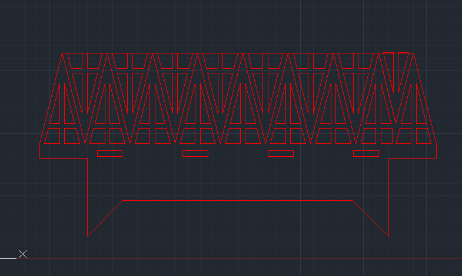
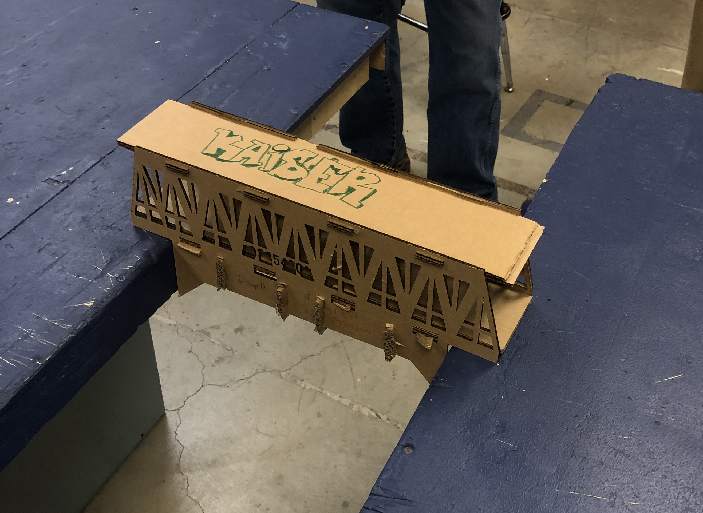

This is a screenshot of our front and the side view of our bridge in AutoCAD. These two views encompassed a majority of the design for the bridge, excluding the simple floor which just had a couple of inserts.

Our bridge pictured below, which had a total weight of 173g, did very well for it's first testing. It supported a weight of 24.95 kg before it broke. What worked very well was the truss design that made up the side view, for it held very well, especially at the most stressed parts that were on the ends of it. Oppositely, the main "road" of the bridge is the point of greatest pressure, so naturally it is the part that ended up failing first. The main improvements my group conceived was to make the top trusses smaller, and to avoid using a whole roof over the bridge to reduce weight, as that part doesn't really experience much force. Alongside that, we want to have small triangles inbetween two layers of floorboards that will bend under compression, allowing the bridge to support a much bigger weight.
.png)
